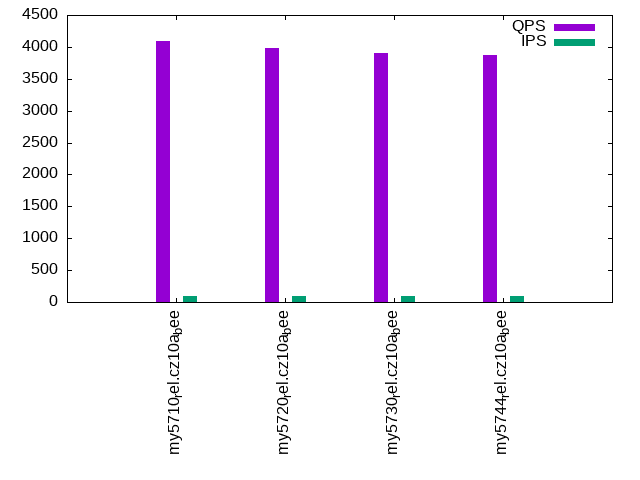

This is a report for the insert benchmark with 800M docs and 1 client(s). It is generated by scripts (bash, awk, sed) and Tufte might not be impressed. An overview of the insert benchmark is here and a short update is here. Below, by DBMS, I mean DBMS+version.config. An example is my8020.c10b40 where my means MySQL, 8020 is version 8.0.20 and c10b40 is the name for the configuration file.
The test server has 8 AMD cores, 16G RAM and an NVMe SSD. It is described here as the Beelink. The benchmark was run with 1 client and there were 1 or 3 connections per client (1 for queries or inserts without rate limits, 1+1 for rate limited inserts+deletes). It uses 1 table. It loads 800M rows per table without secondary indexes, creates 3 secondary indexes per table, then inserts 5m rows per table with a delete per insert to avoid growing the table. It then does 6 read+write tests for 1800s each that do queries as fast as possible with 100,100,500,500,1000,1000 inserts/s and the same for deletes/s per client concurrent with the queries. The database is larger than memory. Clients and the DBMS share one server. The per-database configs are in the per-database subdirectories here.
The tested DBMS are:
The numbers are inserts/s for l.i0, l.i1 and l.i2, indexed docs (or rows) /s for l.x and queries/s for qr100, qp100 thru qr1000, qp1000" The values are the average rate over the entire test for inserts (IPS) and queries (QPS). The range of values for IPS and QPS is split into 3 parts: bottom 25%, middle 50%, top 25%. Values in the bottom 25% have a red background, values in the top 25% have a green background and values in the middle have no color. A gray background is used for values that can be ignored because the DBMS did not sustain the target insert rate. Red backgrounds are not used when the minimum value is within 80% of the max value.
| dbms | l.i0 | l.x | l.i1 | l.i2 | qr100 | qp100 | qr500 | qp500 | qr1000 | qp1000 |
|---|---|---|---|---|---|---|---|---|---|---|
| my5710_rel.cz10a_bee | 83981 | 113928 | 1798 | 2101 | 4090 | 646 | 4192 | 574 | 4280 | 521 |
| my5720_rel.cz10a_bee | 83255 | 114564 | 1787 | 2008 | 3977 | 647 | 4126 | 573 | 4201 | 520 |
| my5730_rel.cz10a_bee | 80759 | 111467 | 1723 | 2024 | 3903 | 646 | 4017 | 573 | 4212 | 520 |
| my5744_rel.cz10a_bee | 80980 | 109845 | 1729 | 2049 | 3870 | 644 | 4046 | 570 | 4132 | 518 |
This table has relative throughput, throughput for the DBMS relative to the DBMS in the first line, using the absolute throughput from the previous table. Values less than 0.95 have a yellow background. Values greater than 1.05 have a blue background.
| dbms | l.i0 | l.x | l.i1 | l.i2 | qr100 | qp100 | qr500 | qp500 | qr1000 | qp1000 |
|---|---|---|---|---|---|---|---|---|---|---|
| my5710_rel.cz10a_bee | 1.00 | 1.00 | 1.00 | 1.00 | 1.00 | 1.00 | 1.00 | 1.00 | 1.00 | 1.00 |
| my5720_rel.cz10a_bee | 0.99 | 1.01 | 0.99 | 0.96 | 0.97 | 1.00 | 0.98 | 1.00 | 0.98 | 1.00 |
| my5730_rel.cz10a_bee | 0.96 | 0.98 | 0.96 | 0.96 | 0.95 | 1.00 | 0.96 | 1.00 | 0.98 | 1.00 |
| my5744_rel.cz10a_bee | 0.96 | 0.96 | 0.96 | 0.98 | 0.95 | 1.00 | 0.97 | 0.99 | 0.97 | 0.99 |
This lists the average rate of inserts/s for the tests that do inserts concurrent with queries. For such tests the query rate is listed in the table above. The read+write tests are setup so that the insert rate should match the target rate every second. Cells that are not at least 95% of the target have a red background to indicate a failure to satisfy the target.
| dbms | qr100.L1 | qp100.L2 | qr500.L3 | qp500.L4 | qr1000.L5 | qp1000.L6 |
|---|---|---|---|---|---|---|
| my5710_rel.cz10a_bee | 100 | 100 | 499 | 499 | 998 | 998 |
| my5720_rel.cz10a_bee | 100 | 100 | 499 | 499 | 998 | 998 |
| my5730_rel.cz10a_bee | 100 | 100 | 498 | 499 | 998 | 998 |
| my5744_rel.cz10a_bee | 100 | 100 | 498 | 498 | 997 | 997 |
| target | 100 | 100 | 500 | 500 | 1000 | 1000 |
l.i0: load without secondary indexes. Graphs for performance per 1-second interval are here.
Average throughput:
Insert response time histogram: each cell has the percentage of responses that take <= the time in the header and max is the max response time in seconds. For the max column values in the top 25% of the range have a red background and in the bottom 25% of the range have a green background. The red background is not used when the min value is within 80% of the max value.
| dbms | 256us | 1ms | 4ms | 16ms | 64ms | 256ms | 1s | 4s | 16s | gt | max |
|---|---|---|---|---|---|---|---|---|---|---|---|
| my5710_rel.cz10a_bee | 2.011 | 97.652 | 0.318 | 0.016 | 0.002 | 0.120 | |||||
| my5720_rel.cz10a_bee | 0.866 | 98.795 | 0.321 | 0.016 | 0.002 | 0.122 | |||||
| my5730_rel.cz10a_bee | 0.445 | 99.185 | 0.220 | 0.148 | 0.002 | 0.118 | |||||
| my5744_rel.cz10a_bee | 0.415 | 99.215 | 0.218 | 0.149 | 0.003 | 0.121 |
Performance metrics for the DBMS listed above. Some are normalized by throughput, others are not. Legend for results is here.
ips qps rps rmbps wps wmbps rpq rkbpq wpi wkbpi csps cpups cspq cpupq dbgb1 dbgb2 rss maxop p50 p99 tag 83981 0 0 0.0 433.8 30.4 0.000 0.000 0.005 0.371 9194 21.5 0.109 20 52.6 69.1 10.9 0.120 84306 75616 my5710_rel.cz10a_bee 83255 0 0 0.0 430.2 30.2 0.000 0.000 0.005 0.371 9109 21.6 0.109 21 52.6 69.1 10.9 0.122 83593 74914 my5720_rel.cz10a_bee 80759 0 0 0.0 419.0 29.3 0.000 0.000 0.005 0.371 8855 21.3 0.110 21 52.6 69.1 10.9 0.118 81008 72448 my5730_rel.cz10a_bee 80980 0 0 0.0 420.7 29.4 0.000 0.000 0.005 0.372 9017 21.4 0.111 21 52.6 69.1 10.9 0.121 81352 71824 my5744_rel.cz10a_bee
l.x: create secondary indexes.
Average throughput:
Performance metrics for the DBMS listed above. Some are normalized by throughput, others are not. Legend for results is here.
ips qps rps rmbps wps wmbps rpq rkbpq wpi wkbpi csps cpups cspq cpupq dbgb1 dbgb2 rss maxop p50 p99 tag 113928 0 716 114.5 978.1 135.5 0.006 1.029 0.009 1.218 6586 12.4 0.058 9 121.1 137.7 11.1 0.002 NA NA my5710_rel.cz10a_bee 114564 0 716 115.2 974.8 136.2 0.006 1.030 0.009 1.217 6586 12.4 0.057 9 121.1 137.7 11.1 0.002 NA NA my5720_rel.cz10a_bee 111467 0 692 112.1 963.6 132.6 0.006 1.029 0.009 1.218 6528 12.0 0.059 9 121.1 137.7 11.0 0.002 NA NA my5730_rel.cz10a_bee 109845 0 692 110.8 952.2 131.0 0.006 1.033 0.009 1.222 6708 12.2 0.061 9 121.1 137.7 10.4 0.002 NA NA my5744_rel.cz10a_bee
l.i1: continue load after secondary indexes created with 50 inserts per transaction. Graphs for performance per 1-second interval are here.
Average throughput:
Insert response time histogram: each cell has the percentage of responses that take <= the time in the header and max is the max response time in seconds. For the max column values in the top 25% of the range have a red background and in the bottom 25% of the range have a green background. The red background is not used when the min value is within 80% of the max value.
| dbms | 256us | 1ms | 4ms | 16ms | 64ms | 256ms | 1s | 4s | 16s | gt | max |
|---|---|---|---|---|---|---|---|---|---|---|---|
| my5710_rel.cz10a_bee | 24.575 | 70.234 | 5.191 | 0.251 | |||||||
| my5720_rel.cz10a_bee | 23.384 | 71.421 | 5.194 | 0.001 | 0.266 | ||||||
| my5730_rel.cz10a_bee | 22.980 | 71.529 | 5.489 | 0.003 | 0.348 | ||||||
| my5744_rel.cz10a_bee | 23.245 | 71.362 | 5.389 | 0.004 | 0.337 |
Delete response time histogram: each cell has the percentage of responses that take <= the time in the header and max is the max response time in seconds. For the max column values in the top 25% of the range have a red background and in the bottom 25% of the range have a green background. The red background is not used when the min value is within 80% of the max value.
| dbms | 256us | 1ms | 4ms | 16ms | 64ms | 256ms | 1s | 4s | 16s | gt | max |
|---|---|---|---|---|---|---|---|---|---|---|---|
| my5710_rel.cz10a_bee | 84.642 | 15.163 | 0.188 | 0.007 | 0.128 | ||||||
| my5720_rel.cz10a_bee | 83.526 | 16.286 | 0.186 | 0.001 | 0.140 | ||||||
| my5730_rel.cz10a_bee | 86.684 | 13.071 | 0.239 | 0.006 | 0.077 | ||||||
| my5744_rel.cz10a_bee | 84.528 | 15.205 | 0.261 | 0.006 | 0.103 |
Performance metrics for the DBMS listed above. Some are normalized by throughput, others are not. Legend for results is here.
ips qps rps rmbps wps wmbps rpq rkbpq wpi wkbpi csps cpups cspq cpupq dbgb1 dbgb2 rss maxop p50 p99 tag 1798 0 9166 143.2 11343.3 369.1 5.096 81.542 6.307 210.151 56714 21.8 31.534 970 150.6 167.2 10.7 0.251 1698 999 my5710_rel.cz10a_bee 1787 0 9112 142.4 11273.1 366.8 5.098 81.569 6.307 210.134 56879 22.0 31.824 985 150.6 167.2 10.7 0.266 1698 999 my5720_rel.cz10a_bee 1723 0 8875 138.7 10972.8 356.6 5.150 82.398 6.367 211.907 56072 21.2 32.538 984 150.3 166.9 10.7 0.348 1648 899 my5730_rel.cz10a_bee 1729 0 8912 139.3 11023.3 358.3 5.154 82.458 6.374 212.163 56825 21.4 32.860 990 150.3 166.8 10.7 0.337 1648 899 my5744_rel.cz10a_bee
l.i2: continue load after secondary indexes created with 5 inserts per transaction. Graphs for performance per 1-second interval are here.
Average throughput:
Insert response time histogram: each cell has the percentage of responses that take <= the time in the header and max is the max response time in seconds. For the max column values in the top 25% of the range have a red background and in the bottom 25% of the range have a green background. The red background is not used when the min value is within 80% of the max value.
| dbms | 256us | 1ms | 4ms | 16ms | 64ms | 256ms | 1s | 4s | 16s | gt | max |
|---|---|---|---|---|---|---|---|---|---|---|---|
| my5710_rel.cz10a_bee | 8.330 | 83.292 | 8.013 | 0.364 | 0.001 | 0.092 | |||||
| my5720_rel.cz10a_bee | 6.410 | 84.348 | 8.928 | 0.314 | 0.058 | ||||||
| my5730_rel.cz10a_bee | 6.602 | 84.097 | 8.971 | 0.331 | 0.061 | ||||||
| my5744_rel.cz10a_bee | 6.983 | 83.892 | 8.825 | 0.298 | 0.001 | 0.065 |
Delete response time histogram: each cell has the percentage of responses that take <= the time in the header and max is the max response time in seconds. For the max column values in the top 25% of the range have a red background and in the bottom 25% of the range have a green background. The red background is not used when the min value is within 80% of the max value.
| dbms | 256us | 1ms | 4ms | 16ms | 64ms | 256ms | 1s | 4s | 16s | gt | max |
|---|---|---|---|---|---|---|---|---|---|---|---|
| my5710_rel.cz10a_bee | 58.217 | 41.197 | 0.565 | 0.021 | 0.001 | 0.091 | |||||
| my5720_rel.cz10a_bee | 50.113 | 49.166 | 0.704 | 0.017 | 0.039 | ||||||
| my5730_rel.cz10a_bee | 55.534 | 43.807 | 0.638 | 0.020 | 0.001 | 0.075 | |||||
| my5744_rel.cz10a_bee | 57.111 | 42.193 | 0.678 | 0.018 | 0.064 |
Performance metrics for the DBMS listed above. Some are normalized by throughput, others are not. Legend for results is here.
ips qps rps rmbps wps wmbps rpq rkbpq wpi wkbpi csps cpups cspq cpupq dbgb1 dbgb2 rss maxop p50 p99 tag 2101 0 7993 124.9 9827.7 309.2 3.805 60.875 4.678 150.701 58110 29.6 27.661 1127 150.8 167.5 10.7 0.092 2073 1764 my5710_rel.cz10a_bee 2008 0 7977 124.6 9769.3 307.4 3.973 63.562 4.865 156.782 58271 29.7 29.019 1183 150.6 167.3 10.7 0.058 1973 1713 my5720_rel.cz10a_bee 2024 0 8087 126.4 9899.2 311.6 3.995 63.920 4.890 157.628 59540 29.5 29.414 1166 150.4 167.1 10.7 0.061 1983 1723 my5730_rel.cz10a_bee 2049 0 8175 127.7 10024.5 315.7 3.990 63.834 4.892 157.758 60660 29.6 29.603 1156 150.3 167.1 10.7 0.065 2028 1709 my5744_rel.cz10a_bee
qr100.L1: range queries with 100 insert/s per client. Graphs for performance per 1-second interval are here.
Average throughput:
Query response time histogram: each cell has the percentage of responses that take <= the time in the header and max is the max response time in seconds. For max values in the top 25% of the range have a red background and in the bottom 25% of the range have a green background. The red background is not used when the min value is within 80% of the max value.
| dbms | 256us | 1ms | 4ms | 16ms | 64ms | 256ms | 1s | 4s | 16s | gt | max |
|---|---|---|---|---|---|---|---|---|---|---|---|
| my5710_rel.cz10a_bee | 71.193 | 28.639 | 0.154 | 0.015 | nonzero | 0.037 | |||||
| my5720_rel.cz10a_bee | 67.843 | 31.986 | 0.155 | 0.015 | nonzero | 0.035 | |||||
| my5730_rel.cz10a_bee | 65.037 | 34.793 | 0.155 | 0.016 | nonzero | 0.036 | |||||
| my5744_rel.cz10a_bee | 65.433 | 34.397 | 0.155 | 0.015 | nonzero | 0.034 |
Insert response time histogram: each cell has the percentage of responses that take <= the time in the header and max is the max response time in seconds. For max values in the top 25% of the range have a red background and in the bottom 25% of the range have a green background. The red background is not used when the min value is within 80% of the max value.
| dbms | 256us | 1ms | 4ms | 16ms | 64ms | 256ms | 1s | 4s | 16s | gt | max |
|---|---|---|---|---|---|---|---|---|---|---|---|
| my5710_rel.cz10a_bee | 18.833 | 81.083 | 0.083 | 0.086 | |||||||
| my5720_rel.cz10a_bee | 17.361 | 82.639 | 0.037 | ||||||||
| my5730_rel.cz10a_bee | 19.417 | 80.556 | 0.028 | 0.076 | |||||||
| my5744_rel.cz10a_bee | 25.444 | 74.556 | 0.064 |
Delete response time histogram: each cell has the percentage of responses that take <= the time in the header and max is the max response time in seconds. For max values in the top 25% of the range have a red background and in the bottom 25% of the range have a green background. The red background is not used when the min value is within 80% of the max value.
| dbms | 256us | 1ms | 4ms | 16ms | 64ms | 256ms | 1s | 4s | 16s | gt | max |
|---|---|---|---|---|---|---|---|---|---|---|---|
| my5710_rel.cz10a_bee | 98.417 | 1.361 | 0.222 | 0.028 | |||||||
| my5720_rel.cz10a_bee | 97.611 | 2.389 | 0.013 | ||||||||
| my5730_rel.cz10a_bee | 99.111 | 0.889 | 0.013 | ||||||||
| my5744_rel.cz10a_bee | 98.417 | 1.583 | 0.016 |
Performance metrics for the DBMS listed above. Some are normalized by throughput, others are not. Legend for results is here.
ips qps rps rmbps wps wmbps rpq rkbpq wpi wkbpi csps cpups cspq cpupq dbgb1 dbgb2 rss maxop p50 p99 tag 100 4090 987 15.4 899.9 27.7 0.241 3.862 9.026 284.571 20679 14.3 5.056 280 150.8 167.5 10.7 0.037 4043 2335 my5710_rel.cz10a_bee 100 3977 877 13.7 760.5 23.5 0.221 3.530 7.628 240.962 19559 14.1 4.918 284 150.6 167.3 10.7 0.035 3948 2493 my5720_rel.cz10a_bee 100 3903 750 11.7 618.3 19.0 0.192 3.074 6.195 194.869 18561 13.9 4.756 285 150.4 167.1 10.7 0.036 3867 2461 my5730_rel.cz10a_bee 100 3870 736 11.5 601.7 18.5 0.190 3.044 6.041 189.905 18404 14.1 4.755 291 150.3 167.1 10.7 0.034 3836 2397 my5744_rel.cz10a_bee
qp100.L2: point queries with 100 insert/s per client. Graphs for performance per 1-second interval are here.
Average throughput:
Query response time histogram: each cell has the percentage of responses that take <= the time in the header and max is the max response time in seconds. For max values in the top 25% of the range have a red background and in the bottom 25% of the range have a green background. The red background is not used when the min value is within 80% of the max value.
| dbms | 256us | 1ms | 4ms | 16ms | 64ms | 256ms | 1s | 4s | 16s | gt | max |
|---|---|---|---|---|---|---|---|---|---|---|---|
| my5710_rel.cz10a_bee | 0.387 | 99.280 | 0.332 | 0.001 | 0.039 | ||||||
| my5720_rel.cz10a_bee | 0.397 | 99.264 | 0.338 | 0.001 | 0.040 | ||||||
| my5730_rel.cz10a_bee | 0.384 | 99.281 | 0.334 | 0.001 | 0.038 | ||||||
| my5744_rel.cz10a_bee | 0.381 | 99.282 | 0.336 | 0.001 | 0.037 |
Insert response time histogram: each cell has the percentage of responses that take <= the time in the header and max is the max response time in seconds. For max values in the top 25% of the range have a red background and in the bottom 25% of the range have a green background. The red background is not used when the min value is within 80% of the max value.
| dbms | 256us | 1ms | 4ms | 16ms | 64ms | 256ms | 1s | 4s | 16s | gt | max |
|---|---|---|---|---|---|---|---|---|---|---|---|
| my5710_rel.cz10a_bee | 19.278 | 80.722 | 0.060 | ||||||||
| my5720_rel.cz10a_bee | 16.222 | 83.778 | 0.038 | ||||||||
| my5730_rel.cz10a_bee | 18.000 | 82.000 | 0.039 | ||||||||
| my5744_rel.cz10a_bee | 30.056 | 69.944 | 0.052 |
Delete response time histogram: each cell has the percentage of responses that take <= the time in the header and max is the max response time in seconds. For max values in the top 25% of the range have a red background and in the bottom 25% of the range have a green background. The red background is not used when the min value is within 80% of the max value.
| dbms | 256us | 1ms | 4ms | 16ms | 64ms | 256ms | 1s | 4s | 16s | gt | max |
|---|---|---|---|---|---|---|---|---|---|---|---|
| my5710_rel.cz10a_bee | 99.333 | 0.667 | 0.010 | ||||||||
| my5720_rel.cz10a_bee | 99.389 | 0.611 | 0.010 | ||||||||
| my5730_rel.cz10a_bee | 99.556 | 0.444 | 0.010 | ||||||||
| my5744_rel.cz10a_bee | 99.250 | 0.750 | 0.011 |
Performance metrics for the DBMS listed above. Some are normalized by throughput, others are not. Legend for results is here.
ips qps rps rmbps wps wmbps rpq rkbpq wpi wkbpi csps cpups cspq cpupq dbgb1 dbgb2 rss maxop p50 p99 tag 100 646 6359 99.4 990.6 30.3 9.841 157.463 9.926 310.889 18121 5.4 28.046 669 150.8 167.5 10.7 0.039 655 592 my5710_rel.cz10a_bee 100 647 6369 99.5 986.4 30.2 9.838 157.406 9.884 309.778 18169 5.4 28.064 667 150.6 167.3 10.7 0.040 655 591 my5720_rel.cz10a_bee 100 646 6353 99.3 986.5 30.2 9.841 157.462 9.885 309.392 18202 5.3 28.198 657 150.4 167.1 10.7 0.038 655 591 my5730_rel.cz10a_bee 100 644 6369 99.5 982.2 30.0 9.882 158.107 9.871 309.018 18277 5.5 28.359 683 150.3 167.1 10.7 0.037 655 576 my5744_rel.cz10a_bee
qr500.L3: range queries with 500 insert/s per client. Graphs for performance per 1-second interval are here.
Average throughput:
Query response time histogram: each cell has the percentage of responses that take <= the time in the header and max is the max response time in seconds. For max values in the top 25% of the range have a red background and in the bottom 25% of the range have a green background. The red background is not used when the min value is within 80% of the max value.
| dbms | 256us | 1ms | 4ms | 16ms | 64ms | 256ms | 1s | 4s | 16s | gt | max |
|---|---|---|---|---|---|---|---|---|---|---|---|
| my5710_rel.cz10a_bee | 74.936 | 24.881 | 0.159 | 0.024 | nonzero | 0.030 | |||||
| my5720_rel.cz10a_bee | 73.117 | 26.694 | 0.163 | 0.026 | nonzero | 0.037 | |||||
| my5730_rel.cz10a_bee | 70.072 | 29.737 | 0.167 | 0.024 | 0.016 | ||||||
| my5744_rel.cz10a_bee | 70.837 | 28.976 | 0.166 | 0.022 | nonzero | 0.024 |
Insert response time histogram: each cell has the percentage of responses that take <= the time in the header and max is the max response time in seconds. For max values in the top 25% of the range have a red background and in the bottom 25% of the range have a green background. The red background is not used when the min value is within 80% of the max value.
| dbms | 256us | 1ms | 4ms | 16ms | 64ms | 256ms | 1s | 4s | 16s | gt | max |
|---|---|---|---|---|---|---|---|---|---|---|---|
| my5710_rel.cz10a_bee | 77.056 | 22.944 | 0.053 | ||||||||
| my5720_rel.cz10a_bee | 71.978 | 28.022 | 0.055 | ||||||||
| my5730_rel.cz10a_bee | 76.700 | 23.300 | 0.040 | ||||||||
| my5744_rel.cz10a_bee | 80.244 | 19.756 | 0.059 |
Delete response time histogram: each cell has the percentage of responses that take <= the time in the header and max is the max response time in seconds. For max values in the top 25% of the range have a red background and in the bottom 25% of the range have a green background. The red background is not used when the min value is within 80% of the max value.
| dbms | 256us | 1ms | 4ms | 16ms | 64ms | 256ms | 1s | 4s | 16s | gt | max |
|---|---|---|---|---|---|---|---|---|---|---|---|
| my5710_rel.cz10a_bee | 99.017 | 0.972 | 0.011 | 0.024 | |||||||
| my5720_rel.cz10a_bee | 98.517 | 1.483 | 0.016 | ||||||||
| my5730_rel.cz10a_bee | 99.106 | 0.894 | 0.012 | ||||||||
| my5744_rel.cz10a_bee | 94.733 | 5.261 | 0.006 | 0.019 |
Performance metrics for the DBMS listed above. Some are normalized by throughput, others are not. Legend for results is here.
ips qps rps rmbps wps wmbps rpq rkbpq wpi wkbpi csps cpups cspq cpupq dbgb1 dbgb2 rss maxop p50 p99 tag 499 4192 2999 46.9 3214.8 100.2 0.715 11.446 6.445 205.664 32435 18.0 7.738 344 150.8 167.5 10.7 0.030 4142 2590 my5710_rel.cz10a_bee 499 4126 2996 46.8 3211.0 100.1 0.726 11.616 6.440 205.532 32373 18.1 7.846 351 150.6 167.3 10.7 0.037 4077 2509 my5720_rel.cz10a_bee 498 4017 2992 46.8 3207.5 100.0 0.745 11.918 6.445 205.667 32116 18.0 7.995 358 150.4 167.1 10.7 0.016 3980 2413 my5730_rel.cz10a_bee 498 4046 2994 46.8 3213.7 100.1 0.740 11.838 6.457 206.037 32542 18.1 8.042 358 150.3 167.1 10.7 0.024 4012 2412 my5744_rel.cz10a_bee
qp500.L4: point queries with 500 insert/s per client. Graphs for performance per 1-second interval are here.
Average throughput:
Query response time histogram: each cell has the percentage of responses that take <= the time in the header and max is the max response time in seconds. For max values in the top 25% of the range have a red background and in the bottom 25% of the range have a green background. The red background is not used when the min value is within 80% of the max value.
| dbms | 256us | 1ms | 4ms | 16ms | 64ms | 256ms | 1s | 4s | 16s | gt | max |
|---|---|---|---|---|---|---|---|---|---|---|---|
| my5710_rel.cz10a_bee | 0.019 | 97.621 | 2.354 | 0.007 | 0.049 | ||||||
| my5720_rel.cz10a_bee | 0.018 | 97.633 | 2.343 | 0.006 | 0.042 | ||||||
| my5730_rel.cz10a_bee | 0.019 | 97.617 | 2.357 | 0.007 | 0.044 | ||||||
| my5744_rel.cz10a_bee | 0.017 | 97.610 | 2.366 | 0.007 | 0.043 |
Insert response time histogram: each cell has the percentage of responses that take <= the time in the header and max is the max response time in seconds. For max values in the top 25% of the range have a red background and in the bottom 25% of the range have a green background. The red background is not used when the min value is within 80% of the max value.
| dbms | 256us | 1ms | 4ms | 16ms | 64ms | 256ms | 1s | 4s | 16s | gt | max |
|---|---|---|---|---|---|---|---|---|---|---|---|
| my5710_rel.cz10a_bee | 87.667 | 12.289 | 0.044 | 0.089 | |||||||
| my5720_rel.cz10a_bee | 86.222 | 13.739 | 0.039 | 0.077 | |||||||
| my5730_rel.cz10a_bee | 87.006 | 12.961 | 0.033 | 0.091 | |||||||
| my5744_rel.cz10a_bee | 91.033 | 8.939 | 0.028 | 0.077 |
Delete response time histogram: each cell has the percentage of responses that take <= the time in the header and max is the max response time in seconds. For max values in the top 25% of the range have a red background and in the bottom 25% of the range have a green background. The red background is not used when the min value is within 80% of the max value.
| dbms | 256us | 1ms | 4ms | 16ms | 64ms | 256ms | 1s | 4s | 16s | gt | max |
|---|---|---|---|---|---|---|---|---|---|---|---|
| my5710_rel.cz10a_bee | 98.894 | 1.100 | 0.006 | 0.018 | |||||||
| my5720_rel.cz10a_bee | 98.789 | 1.200 | 0.011 | 0.019 | |||||||
| my5730_rel.cz10a_bee | 98.889 | 1.106 | 0.006 | 0.020 | |||||||
| my5744_rel.cz10a_bee | 95.406 | 4.572 | 0.022 | 0.020 |
Performance metrics for the DBMS listed above. Some are normalized by throughput, others are not. Legend for results is here.
ips qps rps rmbps wps wmbps rpq rkbpq wpi wkbpi csps cpups cspq cpupq dbgb1 dbgb2 rss maxop p50 p99 tag 499 574 8452 132.1 3519.7 108.7 14.717 235.472 7.056 223.241 30224 9.6 52.628 1337 150.8 167.5 10.7 0.049 575 543 my5710_rel.cz10a_bee 499 573 8439 131.9 3518.5 108.7 14.735 235.757 7.054 223.139 30326 9.7 52.952 1355 150.6 167.3 10.7 0.042 575 543 my5720_rel.cz10a_bee 499 573 8439 131.9 3517.1 108.7 14.727 235.635 7.051 223.077 30558 9.7 53.329 1354 150.4 167.1 10.7 0.044 575 543 my5730_rel.cz10a_bee 498 570 8412 131.4 3507.7 108.6 14.770 236.326 7.039 223.225 30753 9.7 54.001 1363 150.3 167.1 10.7 0.043 575 543 my5744_rel.cz10a_bee
qr1000.L5: range queries with 1000 insert/s per client. Graphs for performance per 1-second interval are here.
Average throughput:
Query response time histogram: each cell has the percentage of responses that take <= the time in the header and max is the max response time in seconds. For max values in the top 25% of the range have a red background and in the bottom 25% of the range have a green background. The red background is not used when the min value is within 80% of the max value.
| dbms | 256us | 1ms | 4ms | 16ms | 64ms | 256ms | 1s | 4s | 16s | gt | max |
|---|---|---|---|---|---|---|---|---|---|---|---|
| my5710_rel.cz10a_bee | 76.898 | 22.919 | 0.168 | 0.015 | nonzero | 0.033 | |||||
| my5720_rel.cz10a_bee | 74.801 | 25.006 | 0.176 | 0.017 | nonzero | 0.038 | |||||
| my5730_rel.cz10a_bee | 74.973 | 24.842 | 0.171 | 0.014 | nonzero | 0.036 | |||||
| my5744_rel.cz10a_bee | 74.149 | 25.661 | 0.176 | 0.014 | nonzero | 0.034 |
Insert response time histogram: each cell has the percentage of responses that take <= the time in the header and max is the max response time in seconds. For max values in the top 25% of the range have a red background and in the bottom 25% of the range have a green background. The red background is not used when the min value is within 80% of the max value.
| dbms | 256us | 1ms | 4ms | 16ms | 64ms | 256ms | 1s | 4s | 16s | gt | max |
|---|---|---|---|---|---|---|---|---|---|---|---|
| my5710_rel.cz10a_bee | 93.978 | 6.014 | 0.008 | 0.070 | |||||||
| my5720_rel.cz10a_bee | 92.750 | 7.250 | 0.058 | ||||||||
| my5730_rel.cz10a_bee | 92.517 | 7.469 | 0.014 | 0.085 | |||||||
| my5744_rel.cz10a_bee | 91.981 | 8.000 | 0.019 | 0.081 |
Delete response time histogram: each cell has the percentage of responses that take <= the time in the header and max is the max response time in seconds. For max values in the top 25% of the range have a red background and in the bottom 25% of the range have a green background. The red background is not used when the min value is within 80% of the max value.
| dbms | 256us | 1ms | 4ms | 16ms | 64ms | 256ms | 1s | 4s | 16s | gt | max |
|---|---|---|---|---|---|---|---|---|---|---|---|
| my5710_rel.cz10a_bee | 98.217 | 1.742 | 0.042 | 0.036 | |||||||
| my5720_rel.cz10a_bee | 97.861 | 2.136 | 0.003 | 0.021 | |||||||
| my5730_rel.cz10a_bee | 97.431 | 2.539 | 0.031 | 0.049 | |||||||
| my5744_rel.cz10a_bee | 95.925 | 4.056 | 0.019 | 0.046 |
Performance metrics for the DBMS listed above. Some are normalized by throughput, others are not. Legend for results is here.
ips qps rps rmbps wps wmbps rpq rkbpq wpi wkbpi csps cpups cspq cpupq dbgb1 dbgb2 rss maxop p50 p99 tag 998 4280 5632 88.0 6332.9 196.9 1.316 21.057 6.344 201.960 48392 22.7 11.308 424 150.8 167.5 10.7 0.033 4251 2366 my5710_rel.cz10a_bee 998 4201 5624 87.9 6323.8 196.6 1.339 21.423 6.335 201.662 48541 22.9 11.555 436 150.6 167.3 10.7 0.038 4171 2541 my5720_rel.cz10a_bee 998 4212 5625 87.9 6322.7 196.6 1.335 21.365 6.337 201.740 48747 22.8 11.573 433 150.4 167.1 10.7 0.036 4171 2648 my5730_rel.cz10a_bee 997 4132 5624 87.9 6327.6 196.6 1.361 21.780 6.349 202.023 48905 22.9 11.837 443 150.3 167.1 10.7 0.034 4123 2445 my5744_rel.cz10a_bee
qp1000.L6: point queries with 1000 insert/s per client. Graphs for performance per 1-second interval are here.
Average throughput:
Query response time histogram: each cell has the percentage of responses that take <= the time in the header and max is the max response time in seconds. For max values in the top 25% of the range have a red background and in the bottom 25% of the range have a green background. The red background is not used when the min value is within 80% of the max value.
| dbms | 256us | 1ms | 4ms | 16ms | 64ms | 256ms | 1s | 4s | 16s | gt | max |
|---|---|---|---|---|---|---|---|---|---|---|---|
| my5710_rel.cz10a_bee | 0.003 | 95.058 | 4.924 | 0.014 | 0.047 | ||||||
| my5720_rel.cz10a_bee | 0.004 | 95.020 | 4.962 | 0.013 | 0.043 | ||||||
| my5730_rel.cz10a_bee | 0.004 | 94.990 | 4.992 | 0.014 | 0.045 | ||||||
| my5744_rel.cz10a_bee | 0.005 | 94.973 | 5.009 | 0.013 | 0.046 |
Insert response time histogram: each cell has the percentage of responses that take <= the time in the header and max is the max response time in seconds. For max values in the top 25% of the range have a red background and in the bottom 25% of the range have a green background. The red background is not used when the min value is within 80% of the max value.
| dbms | 256us | 1ms | 4ms | 16ms | 64ms | 256ms | 1s | 4s | 16s | gt | max |
|---|---|---|---|---|---|---|---|---|---|---|---|
| my5710_rel.cz10a_bee | 75.117 | 24.714 | 0.169 | 0.100 | |||||||
| my5720_rel.cz10a_bee | 76.436 | 23.394 | 0.169 | 0.094 | |||||||
| my5730_rel.cz10a_bee | 77.008 | 22.819 | 0.172 | 0.085 | |||||||
| my5744_rel.cz10a_bee | 71.981 | 27.814 | 0.206 | 0.089 |
Delete response time histogram: each cell has the percentage of responses that take <= the time in the header and max is the max response time in seconds. For max values in the top 25% of the range have a red background and in the bottom 25% of the range have a green background. The red background is not used when the min value is within 80% of the max value.
| dbms | 256us | 1ms | 4ms | 16ms | 64ms | 256ms | 1s | 4s | 16s | gt | max |
|---|---|---|---|---|---|---|---|---|---|---|---|
| my5710_rel.cz10a_bee | 97.519 | 2.447 | 0.031 | 0.003 | 0.087 | ||||||
| my5720_rel.cz10a_bee | 97.572 | 2.406 | 0.022 | 0.025 | |||||||
| my5730_rel.cz10a_bee | 97.728 | 2.242 | 0.031 | 0.057 | |||||||
| my5744_rel.cz10a_bee | 96.692 | 3.286 | 0.022 | 0.060 |
Performance metrics for the DBMS listed above. Some are normalized by throughput, others are not. Legend for results is here.
ips qps rps rmbps wps wmbps rpq rkbpq wpi wkbpi csps cpups cspq cpupq dbgb1 dbgb2 rss maxop p50 p99 tag 998 521 10708 167.3 6389.5 196.6 20.549 328.784 6.400 201.645 44653 14.5 85.691 2226 150.8 167.5 10.7 0.047 512 463 my5710_rel.cz10a_bee 998 520 10697 167.1 6381.0 196.5 20.587 329.387 6.392 201.545 44830 14.6 86.278 2248 150.6 167.3 10.7 0.043 512 463 my5720_rel.cz10a_bee 998 520 10702 167.2 6382.6 196.4 20.566 329.051 6.393 201.499 45228 14.6 86.911 2244 150.4 167.1 10.7 0.045 512 463 my5730_rel.cz10a_bee 997 518 10698 167.2 6394.1 196.7 20.638 330.202 6.412 201.993 45667 14.6 88.092 2253 150.3 167.1 10.7 0.046 512 448 my5744_rel.cz10a_bee
l.i0: load without secondary indexes
Performance metrics for all DBMS, not just the ones listed above. Some are normalized by throughput, others are not. Legend for results is here.
ips qps rps rmbps wps wmbps rpq rkbpq wpi wkbpi csps cpups cspq cpupq dbgb1 dbgb2 rss maxop p50 p99 tag 83981 0 0 0.0 433.8 30.4 0.000 0.000 0.005 0.371 9194 21.5 0.109 20 52.6 69.1 10.9 0.120 84306 75616 my5710_rel.cz10a_bee 83255 0 0 0.0 430.2 30.2 0.000 0.000 0.005 0.371 9109 21.6 0.109 21 52.6 69.1 10.9 0.122 83593 74914 my5720_rel.cz10a_bee 80759 0 0 0.0 419.0 29.3 0.000 0.000 0.005 0.371 8855 21.3 0.110 21 52.6 69.1 10.9 0.118 81008 72448 my5730_rel.cz10a_bee 80980 0 0 0.0 420.7 29.4 0.000 0.000 0.005 0.372 9017 21.4 0.111 21 52.6 69.1 10.9 0.121 81352 71824 my5744_rel.cz10a_bee
l.x: create secondary indexes
Performance metrics for all DBMS, not just the ones listed above. Some are normalized by throughput, others are not. Legend for results is here.
ips qps rps rmbps wps wmbps rpq rkbpq wpi wkbpi csps cpups cspq cpupq dbgb1 dbgb2 rss maxop p50 p99 tag 113928 0 716 114.5 978.1 135.5 0.006 1.029 0.009 1.218 6586 12.4 0.058 9 121.1 137.7 11.1 0.002 NA NA my5710_rel.cz10a_bee 114564 0 716 115.2 974.8 136.2 0.006 1.030 0.009 1.217 6586 12.4 0.057 9 121.1 137.7 11.1 0.002 NA NA my5720_rel.cz10a_bee 111467 0 692 112.1 963.6 132.6 0.006 1.029 0.009 1.218 6528 12.0 0.059 9 121.1 137.7 11.0 0.002 NA NA my5730_rel.cz10a_bee 109845 0 692 110.8 952.2 131.0 0.006 1.033 0.009 1.222 6708 12.2 0.061 9 121.1 137.7 10.4 0.002 NA NA my5744_rel.cz10a_bee
l.i1: continue load after secondary indexes created with 50 inserts per transaction
Performance metrics for all DBMS, not just the ones listed above. Some are normalized by throughput, others are not. Legend for results is here.
ips qps rps rmbps wps wmbps rpq rkbpq wpi wkbpi csps cpups cspq cpupq dbgb1 dbgb2 rss maxop p50 p99 tag 1798 0 9166 143.2 11343.3 369.1 5.096 81.542 6.307 210.151 56714 21.8 31.534 970 150.6 167.2 10.7 0.251 1698 999 my5710_rel.cz10a_bee 1787 0 9112 142.4 11273.1 366.8 5.098 81.569 6.307 210.134 56879 22.0 31.824 985 150.6 167.2 10.7 0.266 1698 999 my5720_rel.cz10a_bee 1723 0 8875 138.7 10972.8 356.6 5.150 82.398 6.367 211.907 56072 21.2 32.538 984 150.3 166.9 10.7 0.348 1648 899 my5730_rel.cz10a_bee 1729 0 8912 139.3 11023.3 358.3 5.154 82.458 6.374 212.163 56825 21.4 32.860 990 150.3 166.8 10.7 0.337 1648 899 my5744_rel.cz10a_bee
l.i2: continue load after secondary indexes created with 5 inserts per transaction
Performance metrics for all DBMS, not just the ones listed above. Some are normalized by throughput, others are not. Legend for results is here.
ips qps rps rmbps wps wmbps rpq rkbpq wpi wkbpi csps cpups cspq cpupq dbgb1 dbgb2 rss maxop p50 p99 tag 2101 0 7993 124.9 9827.7 309.2 3.805 60.875 4.678 150.701 58110 29.6 27.661 1127 150.8 167.5 10.7 0.092 2073 1764 my5710_rel.cz10a_bee 2008 0 7977 124.6 9769.3 307.4 3.973 63.562 4.865 156.782 58271 29.7 29.019 1183 150.6 167.3 10.7 0.058 1973 1713 my5720_rel.cz10a_bee 2024 0 8087 126.4 9899.2 311.6 3.995 63.920 4.890 157.628 59540 29.5 29.414 1166 150.4 167.1 10.7 0.061 1983 1723 my5730_rel.cz10a_bee 2049 0 8175 127.7 10024.5 315.7 3.990 63.834 4.892 157.758 60660 29.6 29.603 1156 150.3 167.1 10.7 0.065 2028 1709 my5744_rel.cz10a_bee
qr100.L1: range queries with 100 insert/s per client
Performance metrics for all DBMS, not just the ones listed above. Some are normalized by throughput, others are not. Legend for results is here.
ips qps rps rmbps wps wmbps rpq rkbpq wpi wkbpi csps cpups cspq cpupq dbgb1 dbgb2 rss maxop p50 p99 tag 100 4090 987 15.4 899.9 27.7 0.241 3.862 9.026 284.571 20679 14.3 5.056 280 150.8 167.5 10.7 0.037 4043 2335 my5710_rel.cz10a_bee 100 3977 877 13.7 760.5 23.5 0.221 3.530 7.628 240.962 19559 14.1 4.918 284 150.6 167.3 10.7 0.035 3948 2493 my5720_rel.cz10a_bee 100 3903 750 11.7 618.3 19.0 0.192 3.074 6.195 194.869 18561 13.9 4.756 285 150.4 167.1 10.7 0.036 3867 2461 my5730_rel.cz10a_bee 100 3870 736 11.5 601.7 18.5 0.190 3.044 6.041 189.905 18404 14.1 4.755 291 150.3 167.1 10.7 0.034 3836 2397 my5744_rel.cz10a_bee
qp100.L2: point queries with 100 insert/s per client
Performance metrics for all DBMS, not just the ones listed above. Some are normalized by throughput, others are not. Legend for results is here.
ips qps rps rmbps wps wmbps rpq rkbpq wpi wkbpi csps cpups cspq cpupq dbgb1 dbgb2 rss maxop p50 p99 tag 100 646 6359 99.4 990.6 30.3 9.841 157.463 9.926 310.889 18121 5.4 28.046 669 150.8 167.5 10.7 0.039 655 592 my5710_rel.cz10a_bee 100 647 6369 99.5 986.4 30.2 9.838 157.406 9.884 309.778 18169 5.4 28.064 667 150.6 167.3 10.7 0.040 655 591 my5720_rel.cz10a_bee 100 646 6353 99.3 986.5 30.2 9.841 157.462 9.885 309.392 18202 5.3 28.198 657 150.4 167.1 10.7 0.038 655 591 my5730_rel.cz10a_bee 100 644 6369 99.5 982.2 30.0 9.882 158.107 9.871 309.018 18277 5.5 28.359 683 150.3 167.1 10.7 0.037 655 576 my5744_rel.cz10a_bee
qr500.L3: range queries with 500 insert/s per client
Performance metrics for all DBMS, not just the ones listed above. Some are normalized by throughput, others are not. Legend for results is here.
ips qps rps rmbps wps wmbps rpq rkbpq wpi wkbpi csps cpups cspq cpupq dbgb1 dbgb2 rss maxop p50 p99 tag 499 4192 2999 46.9 3214.8 100.2 0.715 11.446 6.445 205.664 32435 18.0 7.738 344 150.8 167.5 10.7 0.030 4142 2590 my5710_rel.cz10a_bee 499 4126 2996 46.8 3211.0 100.1 0.726 11.616 6.440 205.532 32373 18.1 7.846 351 150.6 167.3 10.7 0.037 4077 2509 my5720_rel.cz10a_bee 498 4017 2992 46.8 3207.5 100.0 0.745 11.918 6.445 205.667 32116 18.0 7.995 358 150.4 167.1 10.7 0.016 3980 2413 my5730_rel.cz10a_bee 498 4046 2994 46.8 3213.7 100.1 0.740 11.838 6.457 206.037 32542 18.1 8.042 358 150.3 167.1 10.7 0.024 4012 2412 my5744_rel.cz10a_bee
qp500.L4: point queries with 500 insert/s per client
Performance metrics for all DBMS, not just the ones listed above. Some are normalized by throughput, others are not. Legend for results is here.
ips qps rps rmbps wps wmbps rpq rkbpq wpi wkbpi csps cpups cspq cpupq dbgb1 dbgb2 rss maxop p50 p99 tag 499 574 8452 132.1 3519.7 108.7 14.717 235.472 7.056 223.241 30224 9.6 52.628 1337 150.8 167.5 10.7 0.049 575 543 my5710_rel.cz10a_bee 499 573 8439 131.9 3518.5 108.7 14.735 235.757 7.054 223.139 30326 9.7 52.952 1355 150.6 167.3 10.7 0.042 575 543 my5720_rel.cz10a_bee 499 573 8439 131.9 3517.1 108.7 14.727 235.635 7.051 223.077 30558 9.7 53.329 1354 150.4 167.1 10.7 0.044 575 543 my5730_rel.cz10a_bee 498 570 8412 131.4 3507.7 108.6 14.770 236.326 7.039 223.225 30753 9.7 54.001 1363 150.3 167.1 10.7 0.043 575 543 my5744_rel.cz10a_bee
qr1000.L5: range queries with 1000 insert/s per client
Performance metrics for all DBMS, not just the ones listed above. Some are normalized by throughput, others are not. Legend for results is here.
ips qps rps rmbps wps wmbps rpq rkbpq wpi wkbpi csps cpups cspq cpupq dbgb1 dbgb2 rss maxop p50 p99 tag 998 4280 5632 88.0 6332.9 196.9 1.316 21.057 6.344 201.960 48392 22.7 11.308 424 150.8 167.5 10.7 0.033 4251 2366 my5710_rel.cz10a_bee 998 4201 5624 87.9 6323.8 196.6 1.339 21.423 6.335 201.662 48541 22.9 11.555 436 150.6 167.3 10.7 0.038 4171 2541 my5720_rel.cz10a_bee 998 4212 5625 87.9 6322.7 196.6 1.335 21.365 6.337 201.740 48747 22.8 11.573 433 150.4 167.1 10.7 0.036 4171 2648 my5730_rel.cz10a_bee 997 4132 5624 87.9 6327.6 196.6 1.361 21.780 6.349 202.023 48905 22.9 11.837 443 150.3 167.1 10.7 0.034 4123 2445 my5744_rel.cz10a_bee
qp1000.L6: point queries with 1000 insert/s per client
Performance metrics for all DBMS, not just the ones listed above. Some are normalized by throughput, others are not. Legend for results is here.
ips qps rps rmbps wps wmbps rpq rkbpq wpi wkbpi csps cpups cspq cpupq dbgb1 dbgb2 rss maxop p50 p99 tag 998 521 10708 167.3 6389.5 196.6 20.549 328.784 6.400 201.645 44653 14.5 85.691 2226 150.8 167.5 10.7 0.047 512 463 my5710_rel.cz10a_bee 998 520 10697 167.1 6381.0 196.5 20.587 329.387 6.392 201.545 44830 14.6 86.278 2248 150.6 167.3 10.7 0.043 512 463 my5720_rel.cz10a_bee 998 520 10702 167.2 6382.6 196.4 20.566 329.051 6.393 201.499 45228 14.6 86.911 2244 150.4 167.1 10.7 0.045 512 463 my5730_rel.cz10a_bee 997 518 10698 167.2 6394.1 196.7 20.638 330.202 6.412 201.993 45667 14.6 88.092 2253 150.3 167.1 10.7 0.046 512 448 my5744_rel.cz10a_bee
Insert response time histogram
256us 1ms 4ms 16ms 64ms 256ms 1s 4s 16s gt max tag 0.000 2.011 97.652 0.318 0.016 0.002 0.000 0.000 0.000 0.000 0.120 my5710_rel.cz10a_bee 0.000 0.866 98.795 0.321 0.016 0.002 0.000 0.000 0.000 0.000 0.122 my5720_rel.cz10a_bee 0.000 0.445 99.185 0.220 0.148 0.002 0.000 0.000 0.000 0.000 0.118 my5730_rel.cz10a_bee 0.000 0.415 99.215 0.218 0.149 0.003 0.000 0.000 0.000 0.000 0.121 my5744_rel.cz10a_bee
TODO - determine whether there is data for create index response time
Insert response time histogram
256us 1ms 4ms 16ms 64ms 256ms 1s 4s 16s gt max tag 0.000 0.000 0.000 24.575 70.234 5.191 0.000 0.000 0.000 0.000 0.251 my5710_rel.cz10a_bee 0.000 0.000 0.000 23.384 71.421 5.194 0.001 0.000 0.000 0.000 0.266 my5720_rel.cz10a_bee 0.000 0.000 0.000 22.980 71.529 5.489 0.003 0.000 0.000 0.000 0.348 my5730_rel.cz10a_bee 0.000 0.000 0.000 23.245 71.362 5.389 0.004 0.000 0.000 0.000 0.337 my5744_rel.cz10a_bee
Delete response time histogram
256us 1ms 4ms 16ms 64ms 256ms 1s 4s 16s gt max tag 0.000 0.000 84.642 15.163 0.188 0.007 0.000 0.000 0.000 0.000 0.128 my5710_rel.cz10a_bee 0.000 0.000 83.526 16.286 0.186 0.001 0.000 0.000 0.000 0.000 0.140 my5720_rel.cz10a_bee 0.000 0.000 86.684 13.071 0.239 0.006 0.000 0.000 0.000 0.000 0.077 my5730_rel.cz10a_bee 0.000 0.000 84.528 15.205 0.261 0.006 0.000 0.000 0.000 0.000 0.103 my5744_rel.cz10a_bee
Insert response time histogram
256us 1ms 4ms 16ms 64ms 256ms 1s 4s 16s gt max tag 0.000 8.330 83.292 8.013 0.364 0.001 0.000 0.000 0.000 0.000 0.092 my5710_rel.cz10a_bee 0.000 6.410 84.348 8.928 0.314 0.000 0.000 0.000 0.000 0.000 0.058 my5720_rel.cz10a_bee 0.000 6.602 84.097 8.971 0.331 0.000 0.000 0.000 0.000 0.000 0.061 my5730_rel.cz10a_bee 0.000 6.983 83.892 8.825 0.298 0.001 0.000 0.000 0.000 0.000 0.065 my5744_rel.cz10a_bee
Delete response time histogram
256us 1ms 4ms 16ms 64ms 256ms 1s 4s 16s gt max tag 0.000 58.217 41.197 0.565 0.021 0.001 0.000 0.000 0.000 0.000 0.091 my5710_rel.cz10a_bee 0.000 50.113 49.166 0.704 0.017 0.000 0.000 0.000 0.000 0.000 0.039 my5720_rel.cz10a_bee 0.000 55.534 43.807 0.638 0.020 0.001 0.000 0.000 0.000 0.000 0.075 my5730_rel.cz10a_bee 0.000 57.111 42.193 0.678 0.018 0.000 0.000 0.000 0.000 0.000 0.064 my5744_rel.cz10a_bee
Query response time histogram
256us 1ms 4ms 16ms 64ms 256ms 1s 4s 16s gt max tag 71.193 28.639 0.154 0.015 nonzero 0.000 0.000 0.000 0.000 0.000 0.037 my5710_rel.cz10a_bee 67.843 31.986 0.155 0.015 nonzero 0.000 0.000 0.000 0.000 0.000 0.035 my5720_rel.cz10a_bee 65.037 34.793 0.155 0.016 nonzero 0.000 0.000 0.000 0.000 0.000 0.036 my5730_rel.cz10a_bee 65.433 34.397 0.155 0.015 nonzero 0.000 0.000 0.000 0.000 0.000 0.034 my5744_rel.cz10a_bee
Insert response time histogram
256us 1ms 4ms 16ms 64ms 256ms 1s 4s 16s gt max tag 0.000 0.000 0.000 18.833 81.083 0.083 0.000 0.000 0.000 0.000 0.086 my5710_rel.cz10a_bee 0.000 0.000 0.000 17.361 82.639 0.000 0.000 0.000 0.000 0.000 0.037 my5720_rel.cz10a_bee 0.000 0.000 0.000 19.417 80.556 0.028 0.000 0.000 0.000 0.000 0.076 my5730_rel.cz10a_bee 0.000 0.000 0.000 25.444 74.556 0.000 0.000 0.000 0.000 0.000 0.064 my5744_rel.cz10a_bee
Delete response time histogram
256us 1ms 4ms 16ms 64ms 256ms 1s 4s 16s gt max tag 0.000 0.000 98.417 1.361 0.222 0.000 0.000 0.000 0.000 0.000 0.028 my5710_rel.cz10a_bee 0.000 0.000 97.611 2.389 0.000 0.000 0.000 0.000 0.000 0.000 0.013 my5720_rel.cz10a_bee 0.000 0.000 99.111 0.889 0.000 0.000 0.000 0.000 0.000 0.000 0.013 my5730_rel.cz10a_bee 0.000 0.000 98.417 1.583 0.000 0.000 0.000 0.000 0.000 0.000 0.016 my5744_rel.cz10a_bee
Query response time histogram
256us 1ms 4ms 16ms 64ms 256ms 1s 4s 16s gt max tag 0.000 0.387 99.280 0.332 0.001 0.000 0.000 0.000 0.000 0.000 0.039 my5710_rel.cz10a_bee 0.000 0.397 99.264 0.338 0.001 0.000 0.000 0.000 0.000 0.000 0.040 my5720_rel.cz10a_bee 0.000 0.384 99.281 0.334 0.001 0.000 0.000 0.000 0.000 0.000 0.038 my5730_rel.cz10a_bee 0.000 0.381 99.282 0.336 0.001 0.000 0.000 0.000 0.000 0.000 0.037 my5744_rel.cz10a_bee
Insert response time histogram
256us 1ms 4ms 16ms 64ms 256ms 1s 4s 16s gt max tag 0.000 0.000 0.000 19.278 80.722 0.000 0.000 0.000 0.000 0.000 0.060 my5710_rel.cz10a_bee 0.000 0.000 0.000 16.222 83.778 0.000 0.000 0.000 0.000 0.000 0.038 my5720_rel.cz10a_bee 0.000 0.000 0.000 18.000 82.000 0.000 0.000 0.000 0.000 0.000 0.039 my5730_rel.cz10a_bee 0.000 0.000 0.000 30.056 69.944 0.000 0.000 0.000 0.000 0.000 0.052 my5744_rel.cz10a_bee
Delete response time histogram
256us 1ms 4ms 16ms 64ms 256ms 1s 4s 16s gt max tag 0.000 0.000 99.333 0.667 0.000 0.000 0.000 0.000 0.000 0.000 0.010 my5710_rel.cz10a_bee 0.000 0.000 99.389 0.611 0.000 0.000 0.000 0.000 0.000 0.000 0.010 my5720_rel.cz10a_bee 0.000 0.000 99.556 0.444 0.000 0.000 0.000 0.000 0.000 0.000 0.010 my5730_rel.cz10a_bee 0.000 0.000 99.250 0.750 0.000 0.000 0.000 0.000 0.000 0.000 0.011 my5744_rel.cz10a_bee
Query response time histogram
256us 1ms 4ms 16ms 64ms 256ms 1s 4s 16s gt max tag 74.936 24.881 0.159 0.024 nonzero 0.000 0.000 0.000 0.000 0.000 0.030 my5710_rel.cz10a_bee 73.117 26.694 0.163 0.026 nonzero 0.000 0.000 0.000 0.000 0.000 0.037 my5720_rel.cz10a_bee 70.072 29.737 0.167 0.024 0.000 0.000 0.000 0.000 0.000 0.000 0.016 my5730_rel.cz10a_bee 70.837 28.976 0.166 0.022 nonzero 0.000 0.000 0.000 0.000 0.000 0.024 my5744_rel.cz10a_bee
Insert response time histogram
256us 1ms 4ms 16ms 64ms 256ms 1s 4s 16s gt max tag 0.000 0.000 0.000 77.056 22.944 0.000 0.000 0.000 0.000 0.000 0.053 my5710_rel.cz10a_bee 0.000 0.000 0.000 71.978 28.022 0.000 0.000 0.000 0.000 0.000 0.055 my5720_rel.cz10a_bee 0.000 0.000 0.000 76.700 23.300 0.000 0.000 0.000 0.000 0.000 0.040 my5730_rel.cz10a_bee 0.000 0.000 0.000 80.244 19.756 0.000 0.000 0.000 0.000 0.000 0.059 my5744_rel.cz10a_bee
Delete response time histogram
256us 1ms 4ms 16ms 64ms 256ms 1s 4s 16s gt max tag 0.000 0.000 99.017 0.972 0.011 0.000 0.000 0.000 0.000 0.000 0.024 my5710_rel.cz10a_bee 0.000 0.000 98.517 1.483 0.000 0.000 0.000 0.000 0.000 0.000 0.016 my5720_rel.cz10a_bee 0.000 0.000 99.106 0.894 0.000 0.000 0.000 0.000 0.000 0.000 0.012 my5730_rel.cz10a_bee 0.000 0.000 94.733 5.261 0.006 0.000 0.000 0.000 0.000 0.000 0.019 my5744_rel.cz10a_bee
Query response time histogram
256us 1ms 4ms 16ms 64ms 256ms 1s 4s 16s gt max tag 0.000 0.019 97.621 2.354 0.007 0.000 0.000 0.000 0.000 0.000 0.049 my5710_rel.cz10a_bee 0.000 0.018 97.633 2.343 0.006 0.000 0.000 0.000 0.000 0.000 0.042 my5720_rel.cz10a_bee 0.000 0.019 97.617 2.357 0.007 0.000 0.000 0.000 0.000 0.000 0.044 my5730_rel.cz10a_bee 0.000 0.017 97.610 2.366 0.007 0.000 0.000 0.000 0.000 0.000 0.043 my5744_rel.cz10a_bee
Insert response time histogram
256us 1ms 4ms 16ms 64ms 256ms 1s 4s 16s gt max tag 0.000 0.000 0.000 87.667 12.289 0.044 0.000 0.000 0.000 0.000 0.089 my5710_rel.cz10a_bee 0.000 0.000 0.000 86.222 13.739 0.039 0.000 0.000 0.000 0.000 0.077 my5720_rel.cz10a_bee 0.000 0.000 0.000 87.006 12.961 0.033 0.000 0.000 0.000 0.000 0.091 my5730_rel.cz10a_bee 0.000 0.000 0.000 91.033 8.939 0.028 0.000 0.000 0.000 0.000 0.077 my5744_rel.cz10a_bee
Delete response time histogram
256us 1ms 4ms 16ms 64ms 256ms 1s 4s 16s gt max tag 0.000 0.000 98.894 1.100 0.006 0.000 0.000 0.000 0.000 0.000 0.018 my5710_rel.cz10a_bee 0.000 0.000 98.789 1.200 0.011 0.000 0.000 0.000 0.000 0.000 0.019 my5720_rel.cz10a_bee 0.000 0.000 98.889 1.106 0.006 0.000 0.000 0.000 0.000 0.000 0.020 my5730_rel.cz10a_bee 0.000 0.000 95.406 4.572 0.022 0.000 0.000 0.000 0.000 0.000 0.020 my5744_rel.cz10a_bee
Query response time histogram
256us 1ms 4ms 16ms 64ms 256ms 1s 4s 16s gt max tag 76.898 22.919 0.168 0.015 nonzero 0.000 0.000 0.000 0.000 0.000 0.033 my5710_rel.cz10a_bee 74.801 25.006 0.176 0.017 nonzero 0.000 0.000 0.000 0.000 0.000 0.038 my5720_rel.cz10a_bee 74.973 24.842 0.171 0.014 nonzero 0.000 0.000 0.000 0.000 0.000 0.036 my5730_rel.cz10a_bee 74.149 25.661 0.176 0.014 nonzero 0.000 0.000 0.000 0.000 0.000 0.034 my5744_rel.cz10a_bee
Insert response time histogram
256us 1ms 4ms 16ms 64ms 256ms 1s 4s 16s gt max tag 0.000 0.000 0.000 93.978 6.014 0.008 0.000 0.000 0.000 0.000 0.070 my5710_rel.cz10a_bee 0.000 0.000 0.000 92.750 7.250 0.000 0.000 0.000 0.000 0.000 0.058 my5720_rel.cz10a_bee 0.000 0.000 0.000 92.517 7.469 0.014 0.000 0.000 0.000 0.000 0.085 my5730_rel.cz10a_bee 0.000 0.000 0.000 91.981 8.000 0.019 0.000 0.000 0.000 0.000 0.081 my5744_rel.cz10a_bee
Delete response time histogram
256us 1ms 4ms 16ms 64ms 256ms 1s 4s 16s gt max tag 0.000 0.000 98.217 1.742 0.042 0.000 0.000 0.000 0.000 0.000 0.036 my5710_rel.cz10a_bee 0.000 0.000 97.861 2.136 0.003 0.000 0.000 0.000 0.000 0.000 0.021 my5720_rel.cz10a_bee 0.000 0.000 97.431 2.539 0.031 0.000 0.000 0.000 0.000 0.000 0.049 my5730_rel.cz10a_bee 0.000 0.000 95.925 4.056 0.019 0.000 0.000 0.000 0.000 0.000 0.046 my5744_rel.cz10a_bee
Query response time histogram
256us 1ms 4ms 16ms 64ms 256ms 1s 4s 16s gt max tag 0.000 0.003 95.058 4.924 0.014 0.000 0.000 0.000 0.000 0.000 0.047 my5710_rel.cz10a_bee 0.000 0.004 95.020 4.962 0.013 0.000 0.000 0.000 0.000 0.000 0.043 my5720_rel.cz10a_bee 0.000 0.004 94.990 4.992 0.014 0.000 0.000 0.000 0.000 0.000 0.045 my5730_rel.cz10a_bee 0.000 0.005 94.973 5.009 0.013 0.000 0.000 0.000 0.000 0.000 0.046 my5744_rel.cz10a_bee
Insert response time histogram
256us 1ms 4ms 16ms 64ms 256ms 1s 4s 16s gt max tag 0.000 0.000 0.000 75.117 24.714 0.169 0.000 0.000 0.000 0.000 0.100 my5710_rel.cz10a_bee 0.000 0.000 0.000 76.436 23.394 0.169 0.000 0.000 0.000 0.000 0.094 my5720_rel.cz10a_bee 0.000 0.000 0.000 77.008 22.819 0.172 0.000 0.000 0.000 0.000 0.085 my5730_rel.cz10a_bee 0.000 0.000 0.000 71.981 27.814 0.206 0.000 0.000 0.000 0.000 0.089 my5744_rel.cz10a_bee
Delete response time histogram
256us 1ms 4ms 16ms 64ms 256ms 1s 4s 16s gt max tag 0.000 0.000 97.519 2.447 0.031 0.003 0.000 0.000 0.000 0.000 0.087 my5710_rel.cz10a_bee 0.000 0.000 97.572 2.406 0.022 0.000 0.000 0.000 0.000 0.000 0.025 my5720_rel.cz10a_bee 0.000 0.000 97.728 2.242 0.031 0.000 0.000 0.000 0.000 0.000 0.057 my5730_rel.cz10a_bee 0.000 0.000 96.692 3.286 0.022 0.000 0.000 0.000 0.000 0.000 0.060 my5744_rel.cz10a_bee